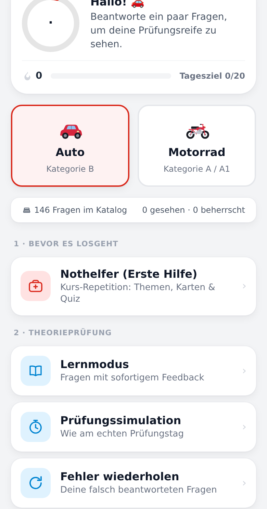
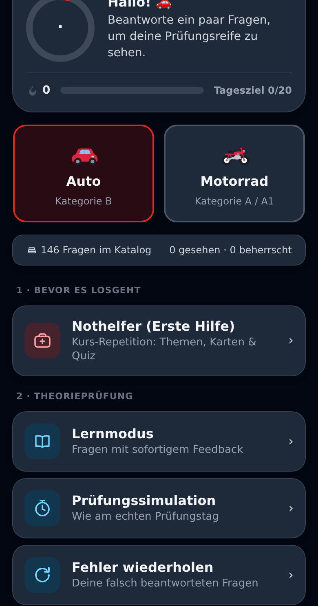
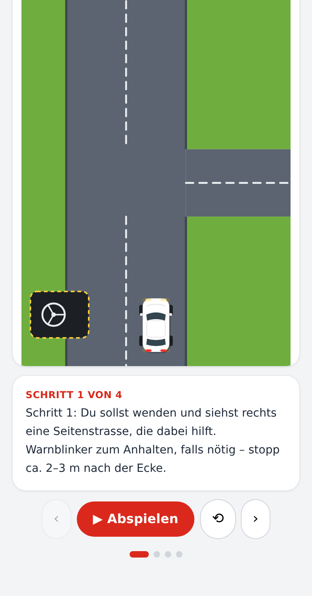
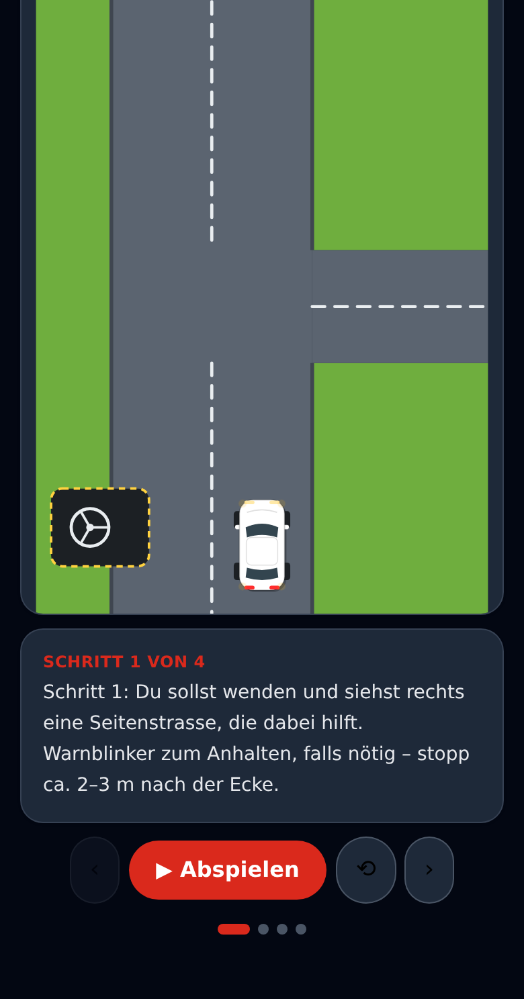

Theorieprüfung Kat. A & B · Online & KI-gestützt
146 Prüfungsfragen, Schritt-für-Schritt animierte Manöver und ein KI-gestütztes Wiederholungssystem – auf Deutsch, Français, Italiano, English, Português und Español.


Echter Bildschirm · Startseite
Dein Weg zum Ausweis
TheorieKI begleitet dich nicht nur bis zur Theorieprüfung, sondern durch den ganzen Weg zum Schweizer Führerausweis – in der Reihenfolge, in der er tatsächlich abläuft.
Wiederhole den Erste-Hilfe-Stoff mit Themen, Lernkarten und einem Quiz – bevor der Kurs überhaupt beginnt.
Lernmodus mit sofortigem Feedback, eine Prüfungssimulation im echten Takt, und ein Fehler-wiederholen-Modus, der genau dort ansetzt, wo es noch hakt.
VKU-Vorbereitung, Schritt-für-Schritt animierte Manöver – Einspuren, Wenden, Parkieren – und Praxis-Tipps für den Prüfungstag.
Kontrollfahrt-Vorbereitung für den Ausweisumtausch, WAB-Infos für die Probezeit, und eine Statistik, die deinen Fortschritt ehrlich zeigt.
Was „KI" hier wirklich bedeutet
Jede Antwort wird gespeichert. Fragen, die du falsch beantwortest, kommen gezielt zurück – so lange, bis du sie wirklich beherrschst, nicht nur einmal richtig gewürfelt hast.
Kein Marketing-Versprechen, sondern die Logik hinter dem Modus «Fehler wiederholen»: Sie entscheidet, was du als Nächstes siehst – nicht der Zufall.


Echter Bildschirm · Animiertes Manöver
Sechs Sprachen, eine Erklärung